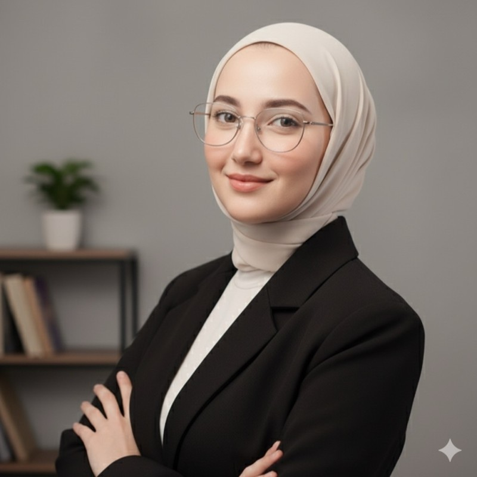

مساحة هادئة وآمنة، لتسمعي نفسك وتُسمعي.
أؤمن أن صحتنا النفسية تنعكس على صحتنا الجسدية وعلى جودة حياتنا. أرافقك في جلسات دعم نفسي عن بُعد، بخصوصية واحترام وبدون أحكام.
الخصوصية والسرّية جزء أساسي من عملي.

رحلة مهنية بدأت من الإيمان بالعافية النفسية
"أؤمن أن الصحة النفسية تلعب دوراً كبيراً في صحتنا الجسدية، ولذلك اخترت تخصص الصحة النفسية والعافية، لأساعد الآخرين على الحفاظ على حالة نفسية صحية نحو حياة أفضل وأسعد."
عملتُ منذ عام 2021 مع أطفال وأسر ومجتمعات في الأردن في مجالات الإرشاد النفسي وحماية الطفل وإدارة الحالات، مع مؤسسات مثل مؤسسة الملك حسين، والإنترناشونال ميديكال كور، وجمعية الحسين.
الخبرة العملية
أخصائية نفسية
مرشدة حماية الطفل
مرشدة نفسية
مديرة حالات
مرشدة نفسية تطوع
مرشدة نفسية
حيث عملتُ وتعلّمتُ
الإرشاد والدعم النفسي
الاستماع والمرافقة ودعم الأفراد في تجاربهم وتحدياتهم اليومية.
حماية الطفل
خبرة ميدانية في دعم الأطفال والأسر ضمن برامج حماية الطفل.
إدارة الحالات
متابعة الحالات وإعداد خطط الرعاية بالتنسيق مع الأسرة والجهات المعنية.
الأطفال وأولياء الأمور
عمل تطوعي مع أطفال لديهم احتياجات خاصة وذويهم.
جلسات دعم نفسي عن بُعد
مساحة للحديث والاستماع والتفكير بما يشغلك، بإيقاع يناسبك. مدة الجلسة والتكلفة والمواعيد تُحدَّد معاً عبر واتساب.
جلسة تعارف
لقاء أولي نتعرف فيه، وتحددين ما تحتاجينه وما يناسبك.
جلسات دعم فردية
جلسات إرشاد ودعم نفسي أونلاين في مساحة خاصة وسرّية.
إرشاد لأولياء الأمور
حوار داعم حول مرافقة الأطفال والتعامل مع تحديات التربية.
هذه الجلسات لا تُقدَّم كتشخيص أو علاج طبي، ولا تغني عن الرعاية الطبية أو الطوارئ.
الأمان أولاً
أؤمن أن الإنسان يستحق أن يُسمَع دون أحكام. أبني الجلسة على الاحترام والاستماع الحقيقي والسرّية، وأمشي بخطوتك أنتِ، بدون ضغط وبدون وعود جاهزة.
الصحة النفسية والجسدية مترابطتان، لذلك نهتم بالصورة الكاملة: مشاعرك وعاداتك ومحيطك.
كيف تتم الجلسة؟
راسليني
تواصلي عبر واتساب وأخبريني بما يناسبك من مواعيد.
نرتّب الموعد
نتفق على الوقت والمدة، وأرسل لك رابط الجلسة.
نلتقي عن بُعد
من مكان تشعرين فيه بالراحة والخصوصية، عبر الإنترنت.
قبل أن تبدئي
هل ما أقوله سرّي؟
نعم، السرّية أساس في عملي. ما يُقال في الجلسة يبقى بينك وبيني، إلا في حالات خطر حقيقي على سلامتك أو سلامة الآخرين، وسأوضح ذلك لك مسبقاً.
كيف أحجز جلسة؟
راسليني على واتساب، ونتفق على موعد مناسب.
كم مدة الجلسة وتكلفتها؟
تُحدَّد التفاصيل معاً عند التواصل، بما يناسب احتياجك.
هل هذه جلسات علاج أو تشخيص؟
لا. الجلسات إرشاد ودعم نفسي، وليست تشخيصاً أو علاجاً طبياً. وإن احتجتِ إلى رعاية متخصصة سأوجّهك إليها بصدق.
هل تضمنين نتيجة معينة؟
لا أعد بنتائج محددة، لكني أعدك بمساحة آمنة ومحترمة ومرافقة صادقة.
ماذا لو كنت في حالة طوارئ؟
إن كنتِ في خطر أو أزمة حادة، تواصلي فوراً مع خدمات الطوارئ في بلدك أو مع شخص تثقين به.
خطوتك الأولى بسيطة
أرسلي رسالة قصيرة على واتساب، وسأرد عليك بخصوصية واحترام.
ابدئي المحادثة على واتساب